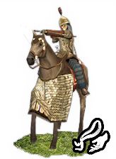
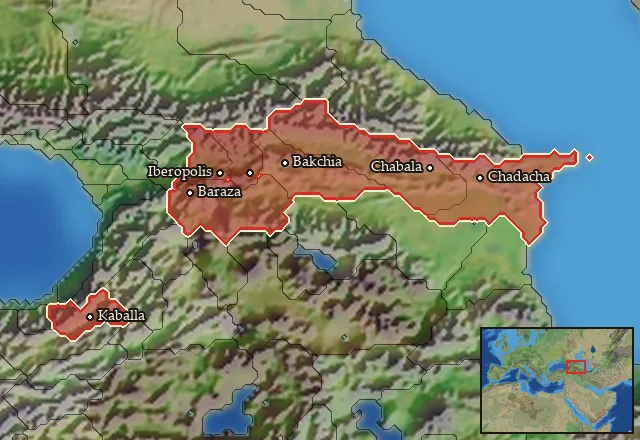

RTR: Imperium Surrectum
RTR: Imperium SurrectumIberian Noble Cavalry


Class: missile · Category: cavalry · Men per unit: 32
Description
The East was renowned for its horse-archers, and these one may have strongly participate in forging the legend. The wealthiest people of their homeland, Caucasian Iberia, their equipment and horses are some of the best. Indeed, they fight mainly as ranged cavalry, so they need light armours, but they won't recoil if they need to fight right in the middle of the melee. This led to a mix of light and heavy cavalry features, like a scale armour over the torso, but with rest of the body bare. They use the composite bow, which is one of the strongest bow that existed, yet a small one; this is the perfect weapon when fighting on a horse back.
Stats
| Rank in roster | Rank in roster | Rank in roster | Rank in roster | ||||||||
|---|---|---|---|---|---|---|---|---|---|---|---|
| Men per unit | 32 | ██········ 23% | Attack | 11 | ████······ 44% | Charge bonus | 23 | ████████·· 79% | Defence | 27 | ████······ 35% |
| · armour | 12 | ███████··· 71% | · defence skill | 15 | ██········ 24% | · shield | 0 | █········· 0% | Morale | 12 | ██████···· 58% |
| Discipline | Normal | Training | Trained | Recruitment cost | 2,646 dn | ████████·· 75% | Upkeep per turn | 1,065 dn | █████████· 92% | ||
| Turns to recruit | 4 |
Weapons
| Primary | Secondary | Primary | Secondary | Primary | Secondary | Primary | Secondary | ||||
|---|---|---|---|---|---|---|---|---|---|---|---|
| Attack | 11 | 11 | Charge bonus | 23 | 30 | Type | missile · archery | melee · blade | Damage | piercing | piercing |
| Projectile | arrow | — | Range | 170 | — | Ammunition | 25 | — |
Defence
| Primary | Secondary | Primary | Secondary | Primary | Secondary | Primary | Secondary | ||||
|---|---|---|---|---|---|---|---|---|---|---|---|
| Total | 27 | — | Armour | 12 | — | Defence skill | 15 | — | Shield | 0 | — |
Condition and terrain
| Hit points | 1 | Mount | generals horse | Modifier against mounts | elephant -1 | Ground: scrub / sand / forest / snow | -2 / -1 / -5 / -1 |
| Charge distance | 40 | Formations | Square |
Technical stats
| Time between blows (primary / secondary) | 2.5 s / 2.5 s | Extra fatigue in hot climates | 1 | Spacing between men: close / loose | 2 × 4.8 m / 3.6 × 6.72 m | Default ranks | 5 |
In battle: Can form Cantabrian circle · Very good stamina
Who can recruit it
No faction has this on its core roster: it can be raised only in the provinces below.
Any faction holding one of the provinces below can field it.
Exactly what a settlement must have, route by route (4)
| Building | Also requires | Building | Also requires | Building | Also requires | Building | Also requires |
|---|---|---|---|---|---|---|---|
| Any settlement | Tier 3 Military Industrial Complex · Caucasian Iberian area of recruitment · Any Government (Dependency, Indirect Rule or Direct Rule) · Tier 2 Colony not built · Requires horses resource, if not available locally you can build Fine Horse Exports to supply it | Direct Rule | Tier 3 Military Industrial Complex · Albanian area of recruitment · Tier 2 Colony · Requires horses resource, if not available locally you can build Fine Horse Exports to supply it | Homeland | Tier 2 Military Industrial Complex · Albanian area of recruitment | Any settlement | Tier 2 Military Industrial Complex · Caucasian Iberian area of recruitment · Dependency only · Tier 1 Colony not built |
Areas of recruitment

| Zone | Provinces | Zone | Provinces | ||||
|---|---|---|---|---|---|---|---|
| Albanian | 2 | Caucasian iberian | 5 |